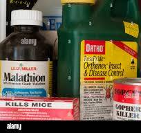

Why Choose Pesticide?
We provide top-notch pest control services to keep your home and office pest-free. Our team of experts uses safe and effective methods to ensure your environment is clean and healthy.
Connect with Us
Call WhatsApp EmailResidential Pest Control
Our residential pest control services ensure your home remains free of pests. We offer customized plans based on specific pest issues and home conditions, using safe and eco-friendly treatments.
Commercial Pest Control
Our commercial pest control services cater to businesses, offices, and industrial facilities. We ensure compliance with health and safety regulations while providing discreet service to avoid disruption.
Termite Control
Termites can cause severe structural damage to your home or business if left untreated. Our termite control services include:
- Inspection and Assessment: Comprehensive inspection to identify termite infestations and assess damage.
- Termite Treatment: Use of effective treatment methods such as liquid termiticides and baiting systems.
- Prevention Plans: Implementation of preventive measures to protect your property from future infestations.
- Damage Repair: Professional repair services to fix termite damage and restore your property.
Why Choose Our Termite Control Services?
Our termite control services offer several benefits:
- Experienced Professionals: Our team is highly trained and experienced in termite control.
- Advanced Techniques: We use the latest techniques and technology for effective termite treatment.
- Eco-Friendly Solutions: Our treatments are safe for your family and the environment.
- Satisfaction Guaranteed: We stand by our work with a satisfaction guarantee.


Rodent Control
Rodents can be a serious problem for both residential and commercial properties. Our rodent control services include:
- Inspection and Identification: Thorough inspection to identify rodent entry points and infestation levels.
- Rodent Extermination: Use of traps, baits, and other effective methods to eliminate rodent populations.
- Exclusion Techniques: Sealing of entry points and other preventive measures to keep rodents out.
- Sanitation and Clean-Up: Removal of rodent waste and disinfection of affected areas to ensure a healthy environment.
Why Choose Our Rodent Control Services?
Our rodent control services offer several benefits:
- Experienced Technicians: Our team is skilled in identifying and addressing rodent problems.
- Comprehensive Solutions: We provide a full range of services from inspection to exclusion and sanitation.
- Safe and Humane Methods: Our techniques are safe for people and pets, and we prioritize humane treatment of rodents.
- Preventive Measures: We focus on long-term solutions to prevent future rodent issues.
Insect Control
Insects can be a nuisance and pose health risks to your family or employees. Our insect control services include:
- Inspection and Identification: Thorough inspection to identify insect infestations and species.
- Insect Extermination: Use of safe and effective treatments to eliminate insects such as ants, cockroaches, and mosquitoes.
- Prevention Plans: Implementation of preventive measures to keep insects from returning.
- Sanitation and Clean-Up: Ensuring a clean and hygienic environment to prevent future infestations.
Why Choose Our Insect Control Services?
Our insect control services offer several benefits:
- Expert Technicians: Our team is experienced in handling a wide range of insect problems.
- Safe and Eco-Friendly Solutions: We use treatments that are safe for people, pets, and the environment.
- Customized Plans: Our solutions are tailored to meet your specific needs and conditions.
- Satisfaction Guaranteed: We offer a satisfaction guarantee to ensure peace of mind.
Contact Us
Connect with Us
Call Victor WhatsApp Victor Email VictorAt Pesticide, we utilize the Program Evaluation and Review Technique (PERT) to ensure efficient and effective management of our pest control services. PERT is a project management tool that helps us streamline our processes, optimize resource allocation, and deliver exceptional service to our clients.
Key Elements of PERT Applied at Pesticide:
- Task Identification and Definition: PERT begins with identifying and defining the specific tasks involved in our pest control services, such as initial inspections, treatment planning, execution, and follow-up.